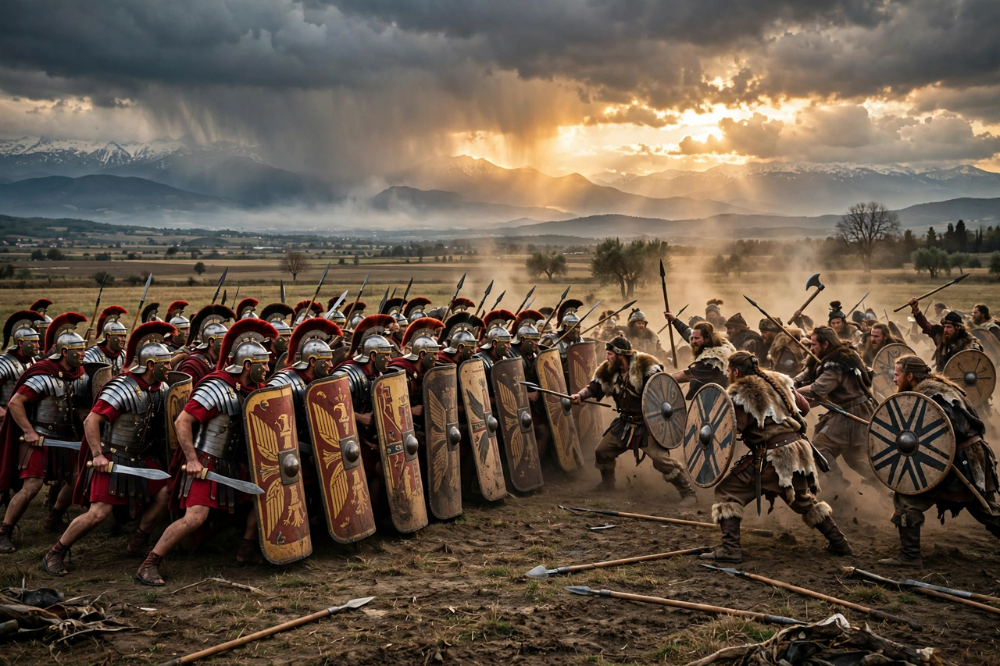

Cimbrian War
From Wikipedia, the free encyclopedia
| Cimbrian War | |
|---|---|
 | |
| Date | 113 – 101 BC |
| Location | Central and southern Europe; Gaul and northern Italy |
| Result | Roman victory |
| Belligerents | Roman Republic vs. Cimbri, Teutones, Ambrones and allies |
| Commanders | Gaius Marius, Quintus Lutatius Catulus — Boiorix (Cimbri), Teutobod (Teutones) |
The Cimbrian War (113–101 BC) was fought between the Roman Republic and the Germanic and Celtic tribes of the Cimbri and the Teutones, who migrated from the Jutland peninsula and defeated several Roman armies, culminating in the disaster at Arausio in 105 BC — one of the worst defeats in Roman history. The war ended with Roman victories under Gaius Marius at Aquae Sextiae (102 BC) and Vercellae (101 BC).
Migration and early defeats
Driven perhaps by flooding and land hunger, the Cimbri and Teutones moved south in a vast migrating host of warriors with families and wagons. In 113 BC they defeated a Roman army under Papirius Carbo at Noreia in Noricum, but turned away from Italy. In 109 and 107 BC they won further victories in Gaul, destroying the army of Marcus Junius Silanus and killing Lucius Cassius Longinus at Burdigala. At Arausio (modern Orange) in 105 BC, quarrelling Roman commanders — the proconsul Quintus Servilius Caepio and consul Gnaeus Mallius Maximus — led their armies to annihilation; ancient sources claim losses up to 80,000 soldiers and 40,000 camp followers.
Marius and the Roman recovery
The catastrophe brought the Roman statesman and general Gaius Marius to repeated consulships and spurred his famous military reforms — professionalising the legions, standardising equipment ("Marius' mules") and opening recruitment to the landless. Having been granted several years to prepare, Marius destroyed the Teutones and Ambrones at Aquae Sextiae in 102 BC, capturing King Teutobod. In 101 BC Marius and Catulus annihilated the Cimbri at Vercellae in Cisalpine Gaul.
Significance
The war terrified Rome — the terror Cimbricus entered political memory — but also reshaped its military and politics, elevating Marius and setting precedents for the great commands of the late Republic's collapse. See also later invaders of Italy and the Roman frontier on the Danube at Singidunum.